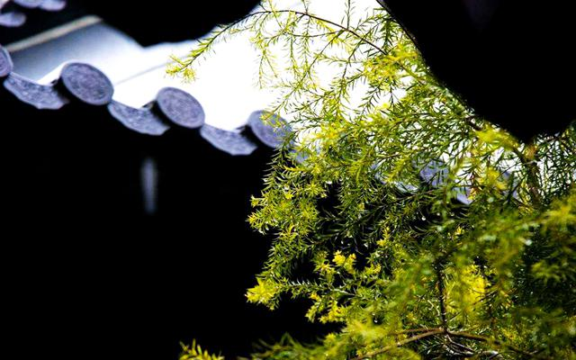
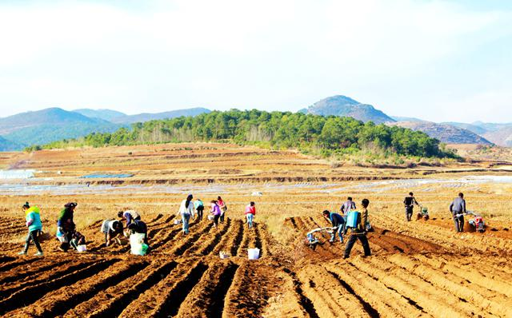
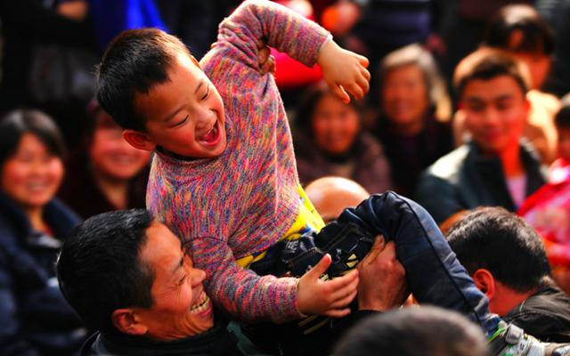
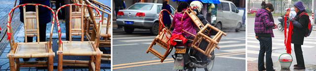

雨水是二十四节气中的第二个节气，一般从公历2月18日或19日开始，到3月4日或5日结束。2018年的雨水时间是2月19日（农历戊戌年正月初四）。此时，气温回升、冰雪融化、降水增多，故而称为雨水。
雨水节气的涵义是降雨开始，雨量渐增。通常，在二十四节气的起源地黄河流域，雨水之前天气寒冷，但见雪花纷飞，难闻雨声淅沥。雨水之后气温回升，雪渐少而雨渐多。而在气候温暖的四川盆地，即使隆冬时节，降雨也不罕见。除个别年份外，霜期至此也告终止。
2018年的雨水节气从“七九”跨越到“九九”。“七九河开八九雁来，九九加一九，犁牛遍地走”，这意味着除了西北、东北、西南高原的部分地区仍是寒冬之外，其他大部分地区已是春风化雨、一派春耕的繁忙景象。
拉保保 “拉保保”也是四川一些地区的习俗。旧时人们为儿女求神问卦，看自己的儿女好不好养，更怕独子夭折，一定要拜个干爹，即“保保”。此举年复一年，传承至今，取雨露滋润、保护生长之意。也有不择时间地点，如在寺院山门前或道路上“拜拉路干爹”、“上门拜干爹”的。要拉干爹的父母手提装好酒菜、香蜡、纸钱的竹篮，带着孩子在人群中找准干爹对象。一旦有人被拉着当“干爹”，大都爽快应允，认为这是对自己的信任，也是双方联络感情，共同关心子女成长，祝福美好生活的体现。
接寿 雨水节上，女婿送节的礼品通常是一丈二尺长的红棉带，称为“接寿”，祈求岳父母长命百岁。女儿炖好猪脚、鸡汤，用红纸、红绳封了罐口，由女婿给岳父母送去，表示感恩。如果是新婚女婿送节，岳父母还要回赠雨伞，意在为出门奔波的女婿遮风挡雨，祝福女婿人生旅途顺利平安。
